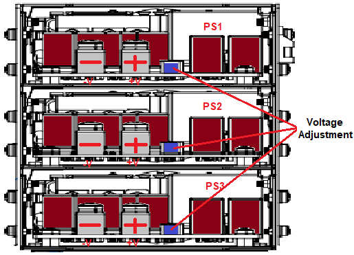
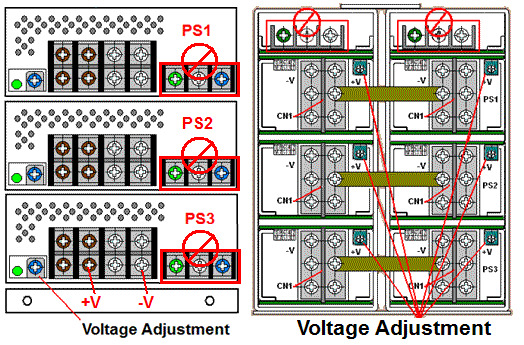
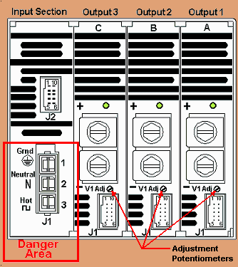
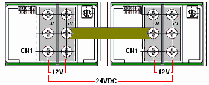

Adjusting Main Power Supply Voltage
This procedure describes how to adjust the main power supply output voltage for the DxI instrument when a power supply module voltage is causing an error message or is shown in diagnostics as slightly out of range.
Perform this procedure when a power supply module voltage is causing an error message or is identified in diagnostics as being slightly out of range.
- Open the lower right front cover of the instrument.
-
Remove the power supply cover to access the power supply (5 screws).
Warning: The power supply input connector has an AC voltage of 180 to 250 V. Use caution when working in this area.
- Close the Main Front instrument covers or bypass the cover interlock switches and set the Reagent Coolers and CPU power switches located on the Power Distribution PCB to On.
- Open the lower right door of the instrument.
- Remove the power supply module cover (five screws).
-
Adjust the power supply output voltage on each module of the power supply.


Warning: The power supply input connector has an AC voltage of 180 to 250 V. Use caution when working in this area.- Measure and adjust the Voltage on each section of the power supply module. Use the Analog Data window in the User Interface or a DVOM connected between the terminal screws on the power supply holding the brown and black wires.
- New TDK:
- Adjust PS1 module to approximately 23.50 +/- 0.1. V.
- Adjust PS2 and PS3 modules to approximately 24.50 +/- 0.1 V.
TDK Power Supply
-
New Cosel or Magnetek:
- Adjust PS1 module to approximately 23.50 +/- 0.1 V.
- Adjust PS2 and PS3 modules to approximately 24.50 +/- 0.1 V.
Magnetek Power Supply

- Old Cosel: Adjust each 12 V section to 12.25 V so that the total output of each module is approximately 24.50 V.
Old Cosel Power Supply
Note: The old Cosel power supply has six 12VDC sections.
- New TDK:
Note: If there is no output, disconnect the wires from CN1 of the defective module, cycle the instrument power off and on, and then recheck the output. If there is output, check for shorts on the output (harness, power distribution PCB). - Measure and adjust the Voltage on each section of the power supply module. Use the Analog Data window in the User Interface or a DVOM connected between the terminal screws on the power supply holding the brown and black wires.
- Install the power supply cover (5 screws).
- Verify the output voltage of the power supplies in the user interface is approximately 24.50 V. Select Diagnostics > Device Diagnostics > Analog Devices > Analog Devices to view the power supply voltages.